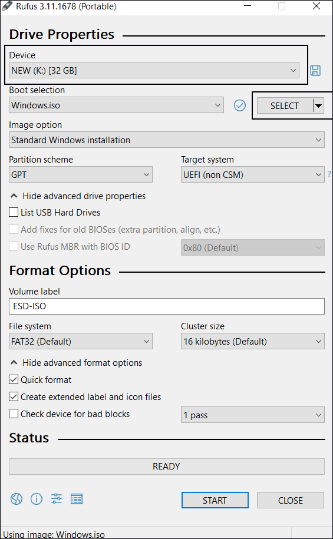
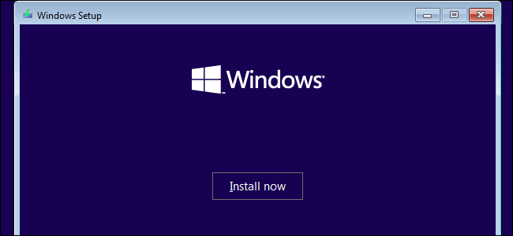

×

Contact Us
Email- nwin123@rediffmail.com
Perfect way to install windows
-: If you already have windows ISO file than skip to Step 5 :-
How to download windows ISO file
Step 1:
Download and install Windows Tool for free.
Step 2: Select language and edition ( Use recommended option )
Step 3: Choose ISO File
Step 4: Select a location for download ISO
How to Create bootable Flash Drive
Step 5:
Download and install Rufus Tool for free.
Step 6: Device Properties in Rufus
In Device section select your Pendrive
in Boot selection select your windows ISO
Now Select Start

How to install windows
Step 7: Now Boot from USB

Step 8: Select langauge and time format

Step 9: Now Select Windows Version ( If you are already using the Genuine version of Windows then this option will skip automatic )
Step 10: Now Select Custom option
Step 11: Now Delete your Windows ( C drive) partition
Step 12: Now select your deleted partiton than click on new, than click Apply
Step 13: After creating new partiton than click next
If you are facing any problem while installing windows
Download and install win32diskimager and create a new bootable drive for free.
Column For Ads